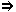
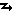
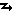

*de
-
*de ↝
Prepozicio montranta:- 1. ↝
-
Punkton en spaco, kie komenciĝas movo,
malproksimiĝo, deiro:
veturi de Parizo ĝis Berlino;
trafi de Scilo al Ĥaribdo
PrV
;
mi venas de la avo, kaj mi iras nun al la onklo
[1];
la vento forblovis de mia kapo la ĉapon
[2];
puŝi ion de si;
la vojo (iranta) de la monto Seir
al Kadeŝ-Barnea
[3];
ili desaltis de la ĉevaloj
[4];
la vazo falis de la tablo.
deloke de,
disde2,
ekde2,
elde1;
 el,
for;
Prepoziciaj kunaĵoj:
de antaŭ,
de malantaŭ,
de apud,
de ĉe,
de ĉirkaŭ,
de inter,
de post,
de sub,
de super,
de sur,
de trans;
al, ĝisRim.: Ĉi tiu senco estas uzebla kun determinato de ĉiu tipo, se nur ĝi elvokas movon. Plej ofte ĝi tamen aperas kun verboj aŭ agaj substantivoj.
el,
for;
Prepoziciaj kunaĵoj:
de antaŭ,
de malantaŭ,
de apud,
de ĉe,
de ĉirkaŭ,
de inter,
de post,
de sub,
de super,
de sur,
de trans;
al, ĝisRim.: Ĉi tiu senco estas uzebla kun determinato de ĉiu tipo, se nur ĝi elvokas movon. Plej ofte ĝi tamen aperas kun verboj aŭ agaj substantivoj. - 2. ↝
-
Metaforan originon, devenon:
de la patro mi ricevis libron,
kaj de la frato mi ricevis plumon
[5];
viŝi de sia vizaĝo la ŝviton;
[Moseo] transdiris al la popolo la vortojn
de la Eternulo
[6];
la hebreoj estas Izraelidoj,
ĉar ili devenas de Izraelo
[7];
deveni de nobela gento;
la helpo venas de la Eternulo
[8];
bojas hundido, kiel ĝi
aŭdas de hundoj
PrV
;
de legado sen atento ne riĉiĝas
la prudento
PrV
;
salutu lin de mi;
de semo putra venas frukto ne nutra
PrV
;
de kiu estas tiu libro?
(en la senco: kiu estas ĝia aŭtoro?);
li havas flugilojn, kiuj estas longaj
de la nuboj ĝis la tero
[9];
objekton malproksiman, apartan, malsimilan:
for de l' okuloj, for de la koro
PrV
;
ne falas frukto malproksime de l' arbo
PrV
;
savu min de miaj malamikoj
[10];
antaŭparolo liberigas de postparolo
PrV
;
edziĝo najbara garantias de eraro
PrV
;
mi povus diferencigi la saĝajn de la malsaĝaj
[11];
ili diferencas de ni nur per la koloro;
aparta de;
disa de;
distanca de;
(mal)proksima de;
najbaraj de
[12];
dependa de;
EE
,
imuna de
[13];
libera de
[14];
pura de
[15];
sendifekta de
[16].
elde2,
disde3,
de el;
Prepoziciaĵoj bazitaj sur adverba kerno:
ĉirkaŭe de,
najbare de,
profite de,
proksime de,
malproksime de.
Rim.: Ĉi tiu senco estas uzebla kun determinato de ĉiu tipo, se nur ĝi elvokas metaforan movon, aŭ ĝian rezulton: distancon. Plej ofte ĝi tamen aperas kun verboj, agaj substantivoj aŭ adjektivoj. Kun ne-agaj substantivoj ( la trajno de Berlino, Francisko de Asizo ) oni prefere uzu el.
- 3. ↝
-
Kaŭzon:
li paliĝis de timo kaj poste
li ruĝiĝis de honto
[17];
de malgranda kandelo forbrulis granda
kastelo
PrV
;
de kantado senpaga doloras la gorĝo
PrV
;
ili malaperis de subita teruro
[18];
tremi de febro;
laca de laborado
EE
,
malsana de amo
[19],
malseka de mirha fluidaĵo
[20],
peza de oro
[21],
rigida de malvarmo
[22],
ruĝa de sango
[23].
pro,
kaŭze de.
Rim.: Ĉi tiu senco estas uzebla kun determinato de ĉiu tipo, sed ĝi ĉefe aperas kun verboj kaj adjektivoj.
- 4. ↝
-
Aganton:
post pasivaj participoj la prepozicio „de“ ĉiam montras nur
la aganton[24];
la surtuto estas aĉetita de mi,
sekve ĝi apartenas al mi
[25];
li estu amata de siaj fratoj
[26];
per helpo de vortaro hispana-germana mi tamen
komprenis
iom vian leteron
[27];
bato de patrino ne longe doloras
PrV
;
la amo de la gepatroj al siaj idoj;
dika branĉo rompiĝis de la vento;
ne manku en la domo de Joab pusulo, nek leprulo
[...], nek falanta de glavo
[28];
la tero estas kovrita de neĝo
[29];
la tablo estis kovrata de la servanto per
tapiŝo.
fare de,
far,
flanke de2;
per;
Prepoziciaĵoj bazitaj sur adverba kerno:
fare de,
manke de,
okaze de,
zorge de.
Rim.: Ĉi tiu senco estas uzebla kun determinatoj de pluraj tipoj: pasiva aŭ pasivsenca verbo, pasiva participo, aga substantivo, pasivsenca de-verba adjektivo (ekz-e la derivaĵoj per sufiksoj ebl kaj ind) aŭ de-verba adverbo. La aganton de aktiva verbo kutime esprimas la subjekto.Rim.: La sinonimoj estas utilaj ekz-e por verboj, kiuj akceptas lokan komplementon: esti venigata de iu loko fare de iu, aŭ por agaj substantivoj, kiam necesas esprimi ankaŭ la objekton: nutrado de infanoj fare de ilia patrino, recenzo de verko far iu. Oni ĉiam memoru, ke de-komplemento post pasiva participo riskas estigi ambiguecon, se ĝi ne montras al la aganto, kaj oni tiam preferu alternativajn solvojn, kiel disde, el, jam de k.s: Z. klarigas, ke anstataŭ la frazo lia propra poŝhorloĝo estis ŝtelita de la hoko [...] estus pli bone diri for de la hoko, anstataŭ ŝi troviĝis ŝirmata for de liaj entreprenoj mi konsilus diri kontraŭ liaj entreprenoj [30].
- 5. ↝
-
Objekton:
mi dankis lin por la tuja plenumo de mia deziro
(por la fakto, ke li tuj plenumis mian deziron)
[31];
donado de almozoj neniam malriĉigas
PrV
;
hakado de ligno donas lignerojn
PrV
;
mortigo de homo estas krimo;
preparo de la venonta kongreso;
enkonduko de Esperanto en la programojn;
sukcesa venkanto de pordoj malfermitaj
PrV
;
multaj estas la elpensintoj de lingvoj internaciaj.
Prepoziciaĵoj bazitaj sur adverba kerno:
escepte de.
Rim.: Ĉi tiu senco estas uzebla kun determinatoj, elvokantaj transiran agon: aga substantivo, substantiva aktiva participo aŭ de-verba adverbo. Verboj, inkluzive de nesubstantivaj participoj, kutime esprimas la objekton per akuzativa komplemento.Rim.: Por eviti ambiguecon oni ofte povas anstataŭigi de5 post aga substantivo per alia senckonforma prepozicio: al, pri, je k.a., aŭ eĉ per akuzativo: akcepto al la kongresanoj; ekspluatado al malsuperaj klasoj; indiko pri la ĝusta vojo; sufero je dorsa doloro; enkonduko unu neŭtralan lingvonZ . Detalan priskribon de tiu demando vd en [32].
- 6. ↝
-
Punkton en tempo, kie komenciĝas tempa intervalo:
de nun la ŝuldoj
de mia filo ne estos pagataj de mi
[33];
tio estis la fortuloj, tre famaj de plej antikva tempo
[34];
via servanto estas diotima de sia juneco
[35];
unu viro, lama de la patrina ventro, estis portata
[36];
de mateno ĝis vespero
[37];
de du jaroj li malsanas;
de eterne
[38].
de post1,
ekde1;
detempe de,
jam de,
de antaŭ,
tuj de,
de el.
Rim.: Ĉi tiu senco estas uzebla kun pluraj tipoj de determinatoj, plej ofte kun verboj aŭ agaj substantivoj.Rim.: En la komencaj jaroj de la lingvo oni ofte emfazis la tempan sencon, uzante kombinon de la prepozicio kun tempa adverbo (jam, tuj) aŭ tempa prepozicio (post).
- 7. ↝
-
Posedanton (vaste komprenatan),
havanton de la determinato:
glaso de vino estas glaso, en kiu antaŭe sin trovis vino, aŭ
kiun oni uzas por vino[39];
la dentoj de leono (la dentoj, kiujn posedas
leono) estas akraj
[40];
la mano de Johano estas pura
[41];
la libro de Petro
(la libro, kiun havas Petro);
de kiu estas tiu libro ?
(en la senco: al kiu ĝi apartenas?);
la dudeka (tago) de Februaro estas
la kvindek-unua tago de la jaro
[42];
tri estas duono de ses
[43];
nevo de papo facile fariĝas kardinalo
PrV
;
ofte ĉapo de kampulo kovras
kapon de saĝulo
PrV
;
de kiu la kulpo, por tiu la puno
PrV
;
doni al iu la baton de morto
PrV
;
la ĉirkaŭaĵoj de la urbo
[44];
li estas la fiero de sia patro;
donu al mi pecon de tiu kukoZ
;
prezo de pano,
sukceso de entrepreno,
utileco de Esperanto,
konkludo de la parolado.
da;
Prepoziciaĵoj bazitaj sur adverba kerno:
dekstre de,
maldekstre de,
norde de,
sude de,
oriente de,
okcidente de,
flanke de,
funde de,
kadre de,
komence de,
laŭlonge de,
interne de.
Rim.: Ĉi tiu senco estas uzebla nur kun substantiva determinato, aŭ kun de-substantiva adverbo. La komplemento enkondukita de de povas esti en la substantiva grupo de la determinato (suplemento) aŭ povas konsistigi prepozitivan predikativon.
- 8.
-
Econ, kiun posedas la determinato:
li estas de meza kresko
[45];
de sama koloro, de sama valoro
PrV
;
ĉevalo de blanka koloro;
de kiu koloro estas tiu ĉevalo?;
potoj, pladoj kaj kruĉoj de plej diversa
formo kaj grando
[46];
floroj de nekomparebla odoro
[47];
homo de granda talento;
sakoj de diversaj grandecoj;
bestoj de sama speco;
libroj de sama valoro;
afero de duba karaktero.
Rim.: Ĉi tiu senco estas uzebla nur kun substantiva determinato, aŭ kun de-substantiva adverbo. La komplemento enkondukita de de povas esti en la substantiva grupo de la determinato (suplemento) aŭ povas konsistigi prepozitivan predikativon.Rim.: Kiam eblas, oni nun preferas uzi samsencan adjektivan kunmetaĵon de la tipo: blankkolora, grandtalenta, samspecaj, samvaloraj...
- 9. ↝
-
Rilaton inter du substantivoj, el kiuj
la determinanto montras la konsiston aŭ la mezuron
de la determinato:
en la daŭro de kelke da minutoj
mi aŭdis du pafojn
[48];
monsumo de mil pundoj;
alto de dudek metroj;
ni iru vojon de tri tagoj en la dezerton
[49];
li havis la aĝon de okdek jaroj
[50];
vi faris eraron de tri frankoj;
ili portis grandegajn bukedojn de freŝaj
floroj en la manoj
[51];
taĉmento de soldatoj
[52];
amaso da mono kaj titolo de barono
PrV
;
popola kutimo havas valoron de leĝo
PrV
;
sub la masko de homamo;
la verko perdus sian eksterordinare necesan karakteron
de dogma fundamenteco
[53];
[ili ĝuas] la honoran nomon de
„instruituloj“
EE
.
Rim.: La komplemento enkondukita de de povas esti en la substantiva grupo de la determinato (suplemento) aŭ povas konsistigi prepozitivan predikativon.Rim.: En pluraj el la ĉi-supraj ekzemploj oni povus same bone uzi prepoziciojn el aŭ je: monsumo je mil pundoj, eraro je tri frankoj, bukedoj el freŝaj floroj, taĉmento el soldatoj , aŭ simplan apudmeton: la titolo „barono“, la honora nomo „instruituloj“. Oni notu, ke titolo de barono estas interpretebla ankaŭ per „la titolo, kiun havas barono“, do per de7.da,
el,
je.
- 10. ↝
-
Gramatikan dependecon kun malpreciza senco:
ŝtono de falpuŝiĝo
PrV
(je kiu oni riskas falpuŝiĝi);
doni lecionon de moroj (pri)
PrV
;
profesoro de botaniko
(= pri)
[54];
glaso plena de akvo
(= je);
ĉiuj enterigitoj estas plenaj de meritoj
PrV
;
la tero pleniĝis de maljustaĵoj
(per, fare de)
[55];
la kanto de la birdoj estas agrabla
(de2,
de4,
de7)
[56];
ne satiĝas la okulo de vidado
(de3,
de4,
pro, fare de, per)
[57];
ili ebriiĝis, sed ne de vino
[58];
esti kontenta de io
(per, pro, kun).
je.
Rim.: Al ĉi tiu „senco“ eblas alkalkuli ekzemplojn, en kiuj de povas havi samtempe plurajn el ties pli precizaj sencoj, aŭ prenas la lokon de logike pli taŭga prepozicio, eventuale pro nacilingva influo.
Rim. 1: La prepozicio de origine havas kvar malsamajn signifojn: 1°) devenan: veturi de Parizo al Berlino, de mateno ĝis vespero, de la patro mi ricevis libron, li paliĝis de timo, laca de laborado 2°) apartenan: glaso de vino, ĉevalo de blanka koloro, monsumo de mil pundoj, la kongreso de Lilo 3°) agantan: la murdo de la policano, kie la policano murdas iun 4°) objektan: la murdo de la policano, kie la policano estas murdata de iu. Por la du lastaj kontraŭaj signifoj, ekzistas jenaj Fundamentaj solvoj: 3°) la murdo ate de la policano 4°) la murdo (ante) al la policano aŭ la murdo ante la policanonRim. 2: Pro la multsenceco de de estas ofte konsilinde anstataŭigi ĝin, se eble, per pli preciza prepozicio (en, el, pri, pro, super, kontraŭ, antaŭ aŭ alia): la kongreso en Göteborg, la fruktoj el la ĝardeno, konkludo el la leciono [59], la enspezoj el (aŭ: pro) la festo, akcepti la honorprotektecon super la kongreso, la problemo pri la senarmiĝo, doni pruvojn pri sia kuraĝo, la modo pri tio pasis jam de longeZ , la preparoj por la festo, ktp.1. L. L. Zamenhof: Fundamento de Esperanto, Ekzercaro, § 9
2. L. L. Zamenhof: Fundamento de Esperanto, Ekzercaro, § 39
3. trad. L. L. Zamenhof: La Malnova Testamento, Readmono 1:2
4. B. Prus, trad. Kazimierz Bein: La Faraono, vol. 2, ĉapitro 19
5. L. L. Zamenhof: Fundamento de Esperanto, Ekzercaro, § 9
6. trad. L. L. Zamenhof: La Malnova Testamento, Nombroj 11:24
7. L. L. Zamenhof: Fundamento de Esperanto, Ekzercaro, § 36
8. trad. L. L. Zamenhof: La Malnova Testamento, Sentencoj 21:31
9. H. C. Andersen, trad. L. L. Zamenhof: Fabeloj, vol. 2, Poligono
10. trad. L. L. Zamenhof: La Malnova Testamento, Psalmaro 143:9
11. H. C. Andersen, trad. L. L. Zamenhof: Fabeloj, vol. 1, La novaj vestoj de la reĝo
12. trad. L. L. Zamenhof: La Malnova Testamento, Juĝistoj 18:22
13. F. Szilágy: La faraono, de Boleslaw Prus, Norda Prismo, 57:5
14. trad. L. L. Zamenhof: La Malnova Testamento, Josuo 2:17
15. trad. L. L. Zamenhof: La Malnova Testamento, Nombroj 5:31
16. trad. L. L. Zamenhof: La Malnova Testamento, Nombroj 5:19
17. L. L. Zamenhof: Fundamento de Esperanto, Ekzercaro, § 39
18. trad. L. L. Zamenhof: La Malnova Testamento, Psalmaro 73:19
19. trad. L. L. Zamenhof: La Malnova Testamento, Alta Kanto 5:8
20. trad. L. L. Zamenhof: La Malnova Testamento, Alta Kanto 5:5
21. H. C. Andersen, trad. L. L. Zamenhof: Fabeloj, vol. 2, Najtingalo
22. H. C. Andersen, trad. L. L. Zamenhof: Fabeloj, vol. 2, Neĝa reĝino
23. H. C. Andersen, trad. L. L. Zamenhof: Fabeloj, vol. 2, Malbela anasido
24. L. L. Zamenhof: Lingvaj Respondoj, Respondo 34, La Revuo, 1908, Majo
25. L. L. Zamenhof: Fundamento de Esperanto, Ekzercaro, § 25
26. trad. L. L. Zamenhof: La Malnova Testamento, Readmono 33:24
27. L. L. Zamenhof: Fundamento de Esperanto, Ekzercaro, § 34
28. trad. L. L. Zamenhof: La Malnova Testamento, II. Samuel 3:29
29. H. C. Andersen, trad. L. L. Zamenhof: Fabeloj, vol. 2, Abio
30. L. L. Zamenhof: Lingvaj Respondoj, Respondo 34, La Revuo, 1908, Majo
31. L. L. Zamenhof: Fundamento de Esperanto, Ekzercaro, § 31
32. Plena Analiza Gramatiko, §136-138
33. L. L. Zamenhof: Fundamento de Esperanto, Ekzercaro, § 25
34. trad. L. L. Zamenhof: La Malnova Testamento, Genezo 6:4
35. trad. L. L. Zamenhof: La Malnova Testamento, I. Reĝoj 18:12
36. La Nova Testamento, La agoj 3:1
37. La Nova Testamento, La agoj 28:23
38. trad. L. L. Zamenhof: La Malnova Testamento, Psalmaro 106:48
39. L. L. Zamenhof: Fundamento de Esperanto, Ekzercaro, § 32
40. L. L. Zamenhof: Fundamento de Esperanto, Ekzercaro, § 7
41. L. L. Zamenhof: Fundamento de Esperanto, Ekzercaro, § 8
42. L. L. Zamenhof: Fundamento de Esperanto, Ekzercaro, § 12
43. L. L. Zamenhof: Fundamento de Esperanto, Ekzercaro, § 14
44. B. Prus, trad. Kazimierz Bein: La Faraono, vol. 1, ĉapitro 1
45. L. L. Zamenhof: Fundamento de Esperanto, Ekzercaro, § 33
46. B. Prus, trad. Kazimierz Bein: La Faraono, vol. 1, ĉapitro 22
47. B. Prus, trad. Kazimierz Bein: La Faraono, vol. 1, ĉapitro 17
48. L. L. Zamenhof: Fundamento de Esperanto, Ekzercaro, § 40
49. trad. L. L. Zamenhof: La Malnova Testamento, Eliro 5:3
50. trad. L. L. Zamenhof: La Malnova Testamento, II. Samuel 19:32
51. B. Prus, trad. Kazimierz Bein: La Faraono, vol. 2, ĉapitro 6
52. B. Prus, trad. Kazimierz Bein: La Faraono, vol. 1, ĉapitro 12
53. L. L. Zamenhof: Fundamento de Esperanto, Antaŭparolo
54. H. C. Andersen, trad. L. L. Zamenhof: Fabeloj, vol. 3, Folio el la ĉielo
55. trad. L. L. Zamenhof: La Malnova Testamento, Genezo 6:13
56. L. L. Zamenhof: Fundamento de Esperanto, Ekzercaro, § 9
57. trad. L. L. Zamenhof: La Malnova Testamento, Predikanto 1:8
58. trad. L. L. Zamenhof: La Malnova Testamento, Jesaja 29:9
59. B. Prus, trad. Kazimierz Bein: La Faraono, vol. 2, ĉapitro 22- angle:
- 1. from
- bulgare:
- 1. от 6. от 7. на
- ĉeĥe:
- od, z, ze
- france:
- de trafi ~ Scilo al Ĥaribdo: tomber de Charybde en Scylla ~ malgranda kandelo forbrulis granda kastelo: petite cause et grands effets sukcesa venkanto ~ pordoj malfermitaj: enfonceur de portes ouvertes doni al iu la baton ~ morto: donner le coup de grâce à qn ĉiuj enterigitoj estas plenaj ~ meritoj: les cimetières sont pleins d'hommes irremplaçables
- germane:
- mit, des, der 1. von, von ... her, aus bojas hundido, kiel ĝi aŭdas ~ hundoj: Wie der Vater, so der Sohn. 2. von, von ... her, aus 3. vor, aus 4. von, des, der 5. von, des, der 6. von ... an, seit 7. von, des, dessen, der, deren 8. von 9. von 10. von, des, der
- hispane:
- de ~ malgranda kandelo forbrulis granda kastelo: pequeña causa y grandes efectos 6. desde
- hungare:
- trafi ~ Scilo al Ĥaribdo: Szkülla és Kharübdisz között hánykódik 1. -tól, -től, -ról, -ről bojas hundido, kiel ĝi aŭdas ~ hundoj: kicsi kutya nagytól tanul ~ semo putra venas frukto ne nutra: ki szemetet vet, dudvát arat for ~ l' okuloj, for ~ la koro: szem nem látja, szív felejti ne falas frukto malproksime ~ l' arbo: nem esik messze az alma a fájától edziĝo najbara garantias ~ eraro: jobb egy ismerőst száz hibával elvenni, mini az ismeretlent eggyel 2. -tól, -től, -ból, -ből ~ malgranda kandelo forbrulis granda kastelo: kicsiny szikrából gyakran nagy tűz támad ~ kantado senpaga doloras la gorĝo: ha ingyen kell énekelni, fáj az ember torka 3. -tól, -től, miatt bato ~ patrino ne longe doloras: az anya ütése nem sokáig fáj 4. által, révén sukcesa venkanto ~ pordoj malfermitaj: nyitott kapukat dönget 5. -nak a, -nek a ~ mateno ĝis vespero: reggeltől estig ~ eterne: öröktől fogva 6. -tól, -től, óta ~ kiu la kulpo, por tiu la puno: aki bűnös, bűnhődjék doni al iu la baton ~ morto: halálos csapást mér rá 7. -nak a, -nek a 8. -ű, -ú 9. -s doni lecionon ~ moroj: móresre tanít ĉiuj enterigitoj estas plenaj ~ meritoj: a halottakról jót vagy semmit 10. -tól, -től, -nak a, -nek a
- pole:
- 1. od, z for ~ l' okuloj, for ~ la koro: czego oczy nie widzą tego sercu nie żal ne falas frukto malproksime ~ l' arbo: niedaleko pada jabłko od jabłoni 2. od, z 3. od, z, z powodu 4. (2. przypadek) 5. (2. przypadek) 6. od 7. (2. przypadek) 8. (2. przypadek), o 9. (2. przypadek), o 10. (2. przypadek)
- portugale:
- de, por, desde
- rumane:
- din, dinspre, de
- ruse:
- 1. от 2. от 3. от (из-за) 6. от, с (о времени), начиная с
- slovake:
- od
- slovene:
- od
- tokipone:
- 4. tan
- volapuke:
- 7. -a
disde
- 1.
- Prepozicio indikanta apartigon, disigon, malsimilon: kribrilo: Multtrua aŭ reta ujo por apartigi solidajn erojn disde likvaĵo, aŭ malsubtilajn disde subtilaj HejmVort ; li opiniis grava tuj distingi ion disde ties malo [60]. por fari klaran distingon disde ĉio alia kaj por uzi „foirismo“ precizan terminon, en la ĉi-sekva teksto mi nomas ĝin [61].
- 2. ↝
- De1: sufiĉis levi la kapon disde la lampo al la ĉielo por kompreni, ke la nokto pasis kaj ne revenos [62].
- 3. ↝
- De2: muro disigis la malsupran palacan ĝardenterason disde la urba placo [63]; la ekzekutisto forprenis la spongon disde la lanco [64]; [leki] kaviaron disde la kulero [65].
60. Claude Piron: La bona lingvo, p. 43a
61. J. Camacho: La liturgio de l' foiro (Elementoj por ekzegezo)
62. Mihail Bulgakov, trad. Sergio Pokrovskij: La majstro kaj Margarita, ĉapitro 6
63. Mihail Bulgakov, trad. Sergio Pokrovskij: La majstro kaj Margarita, ĉapitro 2
64. Mihail Bulgakov, trad. Sergio Pokrovskij: La majstro kaj Margarita, ĉapitro 16
65. Mihail Bulgakov, trad. Sergio Pokrovskij: La majstro kaj Margarita, ĉapitro 24- ĉeĥe:
- od (oddělování), z (něčeho)
- france:
- de, d'avec (séparation)
- hispane:
- de (separación)
- hungare:
- 2. -tól (térben el), -től (térben el) 3. -ról (felületről), -ről (felületről)
- pole:
- 2. od, z 3. od, z
- ruse:
- от
- slovake:
- od, z
ekde ↝
- 1. ↝
-
De6 la
komenco
de, komencante de6:
ĉar sciis li ekde mateno,
Ke li kun multaj gastoj sidos ĉe l’ festeno
[66];
ekde 2002 firmaoj povos prepari patentajn
dokumentojn nur en la angla, franca aŭ germana
[67].
ekde la nokta disiĝo disde viaj amikoj
... ĝis la matena revidiĝo kun ili
[68].
de post;ĝis
- 2. ↝
- (malofte) Komencante de1 iu loko: Ivano klare imagis ... librojn, librojn ekde la farbita planko ĝis la fumnigra plafono [69].
- 3.
- Komencante de iu grado, stato aŭ alia abstrakta punkto: ĉiuj gradoj de armeo, ekde vicleŭtenanto ĝis generalo [70]; [tiu substanco servas por ĉio], ekde nazgutoj kontraŭ malvarmumo kaj bronkito, ĝis stimulrimedo [71]; fakte estas laŭgrada ŝanĝo de esprimrimedoj ekde hazardaj ĝis super- kaj subsistemaj, ĝis unuiĝo de kelkaj funkcioj en unu rimedo [72].
eke de66. A. Mickiewicz, tr. A. Grabowski: Sinjoro Tadeo, Lib. I, v. 158
67. D. ap Fergus: Patenta (mal)sukceso, Monato, 2000:11, p. 11a
68. Deck Dorval: Urd Hadda murdita!, p. 5
69. Mihail Bulgakov, trad. Sergio Pokrovskij: La majstro kaj Margarita, ĉapitro 13
70. La Nova Plena Ilustrita Vortaro, p. 219
71. Deck Dorval: Urd Hadda murdita!, p. 22
72. J. Muraŝkovskij kaj I. Muraŝkovska: Kien fluas roj' Castalie?, Literatura Skatolo/Survoje- ĉeĥe:
- hned po, hned po ,, z, od
- france:
- à partir de, depuis, dès, aussitôt (prép.), sitôt (prép.), à partir du moment, depuis le début de
- germane:
- von ... ab, seit
- hispane:
- a partir de ahora, en seguida
- hungare:
- -tól kezdve, -től kezdve
- katalune:
- a partir de
- okcitane:
- a partir de
- pole:
- od 1. od 2. od, z
- ruse:
- от, начиная с 1. от, с (о времени), начиная с 2. от, начиная с
- slovake:
- od začiatku
elde
(malofte)- 1. ↝
- De1: la eta museto kaŝeliris elde la angulo [73].
- 2. ↝
- De2: la teraj aferoj vidataj elde la malproksimoj stelaj [74]; la (kataluna) reĝo Ĵakvo la 1a konkeris elde islamanoj unue Majorkon kaj poste Valencion [75].
73. R. Kipling, trad. M. Minich: La kato kiu iradis sole, 2003
74. G. Waringhien: Stefano MALLARMÉ (II), La nica literatura revuo, 1:4
75. J. Camacho: LOdE, 2002:7- france:
- de, depuis, d'avec (séparation)
- hispane:
- de, desde
- pole:
- od, z 1. z
- ruse:
- от
jam de ↝
- De6: jam de tre longa tempo la sekvantaj tri verkoj estas rigardataj kiel fundamento de Esperanto [76]; mi ne estas vokita iri al la reĝo jam de tridek tagoj [77].
76. L. L. Zamenhof: Fundamento de Esperanto, Antaŭparolo
77. trad. L. L. Zamenhof: La Malnova Testamento, Ester 4:11- france:
- de, depuis
- hispane:
- desde ahora
- hungare:
- már ... óta
- pole:
- już od
tuj de ↝
-
Ekde1:
la pliboneco de Esperanto antaŭ Volapük
...
falas al ĉiu en la okulojn tuj de la unua rigardo
EE
;
tuj de la komencaj jaroj W.H. Trompeter
...
ĉesigis sian apogon, kiam Zamenhof ne akceptis la
lingvajn
modifojn, per kiuj li volis pligermanigi Esperanton
[78];
[ŝiaj okuloj] tuj de la sojlo renkontis la
vizaĝon de la libristo kaj kvazaŭ algluiĝis
al ĝi
Marta
.
Rim.: Eblas heziti, ĉu tuj de estas aparta termino, aŭ nur hazarda kolizio de adverbo tuj kaj prepozicio de, alivorte ĉu tuj aldonas ideon de tujeco al la ago, aŭ servas ĉefe por doni tempan signifon al la prepozicio de kun eventuala nuanco „jam en la komenco“. La ekzemplo pri Trompeter estas interesa en tio, ke la eventuala tujeco ne koncernas la verbon „ĉesigi“, sed verbon de neesprimita propozicio rezultanta el antaŭa frazo: tuj de la komencaj jaroj [okazis malpaciĝoj, ekz-e] W.H. Trompeter ĉesigis sian apogon...Rim.: Aldone, kelkaj ekzemploj ŝajnas esti interpreteblaj ankaŭ per la lokaj sencoj de tuj kaj de, sed tuj de la sojlo verŝajne signifas tuj de kiam ŝi pasis la sojlon .
78. Boris Kolker: Vojaĝo en Esperanto-lando, G. Waringhien: Kaj tamen ni ĝin atingis!, leciono 21a- france:
- depuis, dès, aussitôt (prép.), sitôt (prép.)
- hispane:
- desde ahora, tan pronto como
- hungare:
- mindjárt ...-tól/től kezdve
- pole:
- tuż po, zaraz po, od
administraj notoj
pri
de:
Restanta laboro: "determinato", referenco al prepoziciaj kunajxoj (*de (mal)antaux, *de apud, *de cxe, *de cxirkaux, *de el, *de inter, *de post, *de sub, *de super, *de sur...), de posedo/posedadjektivo, conservation de la preposition dans une transformation. Kunmetajxoj: *deadmoni, deapartigxi, *debari, *debati, debatigxi, *debordigxi, decentrigo, *decxerpi, *decxevaligxi, *defali, *deflankigxi, defleksi, *deflui, *deflugi, *deformi, *defrauxdi, *defroti, defrotigxi, *degliti, *degrati, *deguti, *dehaki, *deiri, *?dejxeti, *dekalkuli, *dekameligxi, *deklini, deklinigxi, *dekradi, *dekuri, *dekutimigxi, delasi, delevigxi, deliberigxi, deligi, *delogi, deloki, *demamigi, *demeti, *demordi, demovi, demovigxi, *denaska?, denombri?, depafi (pafi dea), dependi, depago, depincxi (~i la butonojn de pluvmantelo VOJ: ??), *depremi , *depreni, *?depusxi, *derompi, *deruli, *desalti, *deskrapi, *deskui, *desolvigxi, *destari (TTT, se detacher), *desxiri, *desxovi, *deteni, *detiri, *detondi, *detrancxi, *detronigi, *deturni, deturnigxi, *deveni, *devisxi, *devojigi [MB]